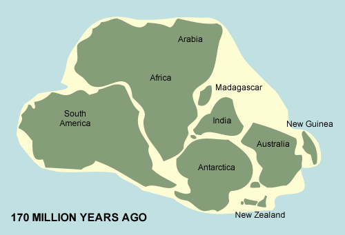
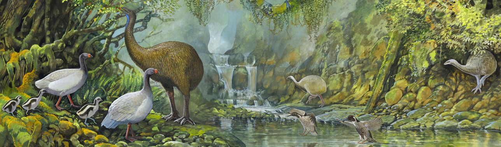

Paleontology in New Zealand provides a unique glimpse into the prehistoric past of an isolated landmass, revealing a rich fossil record that spans hundreds of millions of years. Due to its long geological history and separation from other continents, New Zealand's fossil discoveries include ancient marine reptiles, giant birds, and unique prehistoric plants. The country's fossil record dates back to the Paleozoic Era, with evidence of trilobites and brachiopods, but it is best known for its Mesozoic and Cenozoic fossils.
During the Mesozoic Era, New Zealand was part of the supercontinent Gondwana, and fossils of marine reptiles such as plesiosaurs and mosasaurs have been found in the rocks of Canterbury and Hawke’s Bay. Fossilized dinosaur footprints and bone fragments suggest that non-avian dinosaurs also once roamed the region, though full skeletons are rare due to erosion and the country's dynamic geological activity. These discoveries indicate that New Zealand had a diverse prehistoric ecosystem despite its position at the edge of Gondwana.
In the Cenozoic Era, after New Zealand became fully separated from Gondwana, its fossil record became dominated by unique avian species. Among the most famous finds are the remains of the moa, a group of giant flightless birds, and Haast's eagle, the largest known eagle, which preyed on them. The absence of land mammals led to birds evolving to fill ecological niches typically occupied by mammals elsewhere. Fossilized remains of giant penguins, extinct sharks, and early whales have also been discovered in the limestone deposits of the South Island, further highlighting the region’s rich marine life.
Fossilized plants, such as ancient ferns and conifers, provide insight into New Zealand's prehistoric ecosystems and how they adapted to changing climates over millions of years. Ongoing paleontological research continues to uncover new species, helping scientists understand how isolation shaped the evolution of New Zealand’s flora and fauna. With its rich fossil history and continuous discoveries, New Zealand remains an important site for studying prehistoric life and evolutionary processes.
